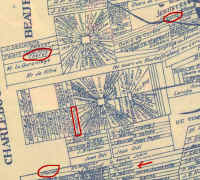

|
The
family of Pierre le cadet and Marie-Anne Beaugis

|
|
Pierre
le cadet Choret married on his
birthday, January 21, 1686, at the age of 24. He
married Marie-Anne Beaugis, who, like her husband, was born
in the colony, in 1665. Their marriage contract was
signed before notaire (notary) Paul Vachon on January 19.
Marie-Anne was
the daughter of Michel Beaugis and Madeleine Dubois, both
from France, Michel more precisely from
the Sables d'Olonne area. Her parents
had married in the cathedral of Notre-Dame de Québec
on October 19, 1661. In the 1666 census
the Beaugis family is listed as living in Beauport, near the
Choret couple. So they were
"longtime acquaintances".
|

MARRIAGE
RECORD:
"On
the twenty-first day of January one thousand six hundred and eighty-six,
I the undersigned Curé of Beauport, after
the publication of the three banns and the
betrothal before the church, [married] according
to the forms of our mother the Holy Church
Pierre Choret the younger, son of the late Mathieu
Choret and of Sébastienne Veillon, of the one part,
with Marie-Anne, daughter of Michel Beaugis and of
Magdeleine Du Bois, of the other part, all of this
parish. Present the Sieurs Paul Vachon,
Resmy, Robert Choret, Jean-Baptiste Provost, all
of this parish except the said Robert Choret, who
is of Quebec, who have all signed except the
said groom and bride, who declared they could
not sign, in accordance with the ordinance;
thus signed: E. Bouillard, s.j., Resmy, P.
Vachon, Robert Choret, J.B. Provost" |
This wedding was
a great event in the Choret family because, on the
same day, two of the family's six sons
married. Indeed, on January 21, 1686, Pierre
l'aîné and Pierre le cadet married their sweethearts in the chapel
of Beauport. Pierre l'aîné (one of the twins)
married Madeleine Giroux.
That winter the family
had much to celebrate, since Robert
Choret, the eldest brother and witness at the wedding of his two
brothers named Pierre,
also married, for the second time, on the following February 7,
in Quebec.
|
|
Weddings
in New France
Marriage was
a very important event in New France, because
it marked the entry of girls and boys into the adult world,
while being a sign of vitality for
the rest of the colony.
The government
encouraged it, moreover, with the "king's
gift", which rewarded newlyweds with a sum
of twenty livres. It also encouraged soldiers to
take a wife in the country and start a family by granting them
a plot of land.
These measures
bore fruit, and marriages in New France grew
more and more numerous. But the protocol was
strict , and people could not marry just as they pleased. Couples
had to ask for their parents' consent
until quite an advanced age: 30 for
men and 25 for women. They also had to
make sure none of the 14 canonical impediments applied,
such as consanguinity, or the
ban on a widower marrying a
relative of his late wife. For
most of these impediments, however, a dispensation could be
obtained. The couple then had to undergo a
prenuptial examination, the publication of the banns, the
signing of the contract, and confession.
When the wedding
day finally arrived, the bride and groom put on their
best Sunday clothes. The bride wore
a veil and sometimes a mantle and
muslin. If she had the misfortune of baring her
bosom and shoulders, the curé could refuse to
bless the union.
The bride was
led to the altar by her father, then the young man
joined her and knelt beside her.
Bearers at once unfurled a veil of white
muslin, which they held above the couple throughout
the ceremony. Then the priest spoke,
questioned the young man and woman about their
religion, made sure no one in the congregation
objected to the marriage, and blessed the rings. The
couple then exchanged their vows, and the young man
took the wedding ring he had earlier placed
on a plate, slipped it onto his bride's finger, and
the union was sealed. At that moment the guests
cast furtive glances and watched one
another for fear someone would tie a knot in
a string, which would make the husband impotent
After blessing
the union, the curé asked the wife to be submissive to
her husband, to have her children baptized and to raise them
in the Christian faith. The Mass that followed was
in Latin, and the priest sometimes ended the ritual by
going to the newlyweds' home to bless the marriage
bed.
The newlyweds
left the church followed by a procession of
carriages. Muskets were fired and a joyful
racket was made all the way to the bride's father's house.
There, a pig had usually been killed and a
great feast prepared for the guests. And they ate,
drank, sang and danced until daybreak.
In better-off families, the party started again the very
next day at the groom's parents' house.
|
|
Pierre
and Marie-Anne, settlers in Beauport.
We
know for certain that Pierre and Marie-Anne spent their whole
lives in Beauport, since all their children were
baptized there. But we do not know exactly where they
lived. We
know that three of Mathieu Choret's seven children
stayed in Beauport: the twins and Pierre le
cadet. Which of them took over the family land? Or
was the land big enough to be divided
among them, allowing each to
support his family on it? Which of the sons kept
their mother Sébastienne until her death in 1698?
|

Here is part of the map
drawn up in 1709 by Gédéon de Catalogne for
the government. At the top,
in the right-hand corner, you can see the land of the ancestor Mathieu,
near the River. But on the left of the map
you can see two other lots belonging to Chorets.
Can we say that these are the places occupied
by Pierre le cadet and the descendants of his two
twin brothers, who died in 1701? We would
need to find documents to establish it.
Right in the centre of the map is the Trait-Carré
of Charlesbourg. The one farther north is
Bourg-Royal; you can see Chorets settled on
each side. Was this originally the
land granted to Mathieu by the Jesuits, whose
northern part went to one of his sons, and whose
centre was sold to build
Bourg-Royal? Many questions, and few
answers without further
research.
What nevertheless inclines me to think my
hypothesis is plausible is that, in Quebec City's
plan to standardize its street names
after the municipal mergers of 2000, it was
suggested that a street located roughly where the Choret land at the
top left lies be named "Mathieu Choret". So far this
plan has not yet been carried out.
To finish our tour of the map, you will find,
marked with an arrow, the Turcot land. One
of Pierre le cadet's sons, Pierre, would marry
Angélique Turcot of Charlesbourg in 1712. So we can
see where she lived shortly before her
marriage. This couple would move to Montreal
a few years later.
Also on the map, alongside the Trait-Carré
of Charlesbourg, outlined in a red rectangle, is the
Pageot land. It belonged to the ancestor
of another line, Thomas Pageau, whose
descendants would nearly all live in
Charlesbourg, down to Marie-Georgianna Pageau, who would be
born there but moved to Montreal in the early
20th century. |
Since Pierre le cadet belonged to the first generation
born in the colony, it was no doubt possible to
divide the family land, or to settle in the
surrounding area. But from the next generation on, people
would have to scatter farther afield, because the land around
Quebec was all taken.
Pierre
le cadet and Marie-Anne surely lived by subsistence
farming, like their parents before them. That
means they had many skills, since they had to
be self-sufficient in many areas of daily
life. Money was scarce, and the goods and
services they could afford were rarer still.
From
1688 to 1718, Marie-Anne gave birth to eighteen children. She was over fifty
when the last ones
were born. Six of them died in early
childhood.
They were lucky to live in a growing colony,
and contributed to it through their work and their large
family. But life was not easy for all that.
The yellow
gold of the fields
In
America wheat was the foundation of the standard of living.
It was the only cereal grown; in times of scarcity or
heavy speculation on the price of wheat, the settler
could not fall back on rye or barley as
Europeans did. At that time the colonist, whether he lived in town or
in the country, ate up to two pounds
of bread a day. It was his main food.
So his survival depended essentially on the yellow gold
of the fields. Quality of life therefore followed
the curve of the price of wheat, which was the index of
poverty or wealth. If wheat ran short,
farmers could eat root vegetables while
waiting for the next harvest, and the well-off in the towns
ate meat, but the others starved if
the State did not help them.
The country
went through several crises (epidemics, wheat shortages,
high wheat prices, lack of work) that forced the
Sovereign Council to pass laws controlling the price
of bread, its quality and its distribution. The State
also tried to find out how much wheat was
available, to prevent speculation, and to store
wheat in good years to hand it out again in times of
scarcity. A Bureau des Pauvres (Poor Relief Office) opened in 1688,
then a Hôpital Général (General Hospital) was founded in 1692. This
Hospital's mission was to take in the destitute,
the disabled, orphans, the sick elderly with no family... just like the
Hôpital de la Salpetrière in Paris, where most of the
Filles du Roy came from, as we have seen.
In 1701 the
Sovereign Council ordered "that inhabitants who
have nothing to sow their land with shall come to terms
with their neighbours or other inhabitants so that their
land shall not go without yielding this year."
In 1710,
after successive shortages and much
speculation by merchants, the social climate turned sour
and protests broke out (as in Europe at the
same time), which the government feared above
all. It had to make new efforts to help
people. Repeated poor harvests
kept the colony from recovering until the summer of
1719.
Throughout
the first half of the 18th century, the
Governors lamented, in their letters to the King, the
low yields of the land, the bad weather
and the lack of labour. They
organized corvées (work bees) to give work to the
poorest day labourers, and soup kitchens
for the most destitute. The
government's priority was to avoid any revolt among the
population; wheat must not run short. But
unfortunately, it often did.
Bishop
de Pontbriand drew a bleak picture in 1743: "The
last two harvests have not met our
hopes; domestic animals are dying in some
places for lack of food; several families have
lately been reduced to seeking from the charity of the
faithful the help they once gave; many
in the countryside hope to hold out until the
harvest only on the fruits and herbs the earth
produces of itself, but a stubborn winter makes us
fear that even this resource will not come
so soon. The help we await so impatiently from France
is exposed to the perpetual dangers that
go with a long voyage. The heavy
snows are greatly delaying the sowing, and perhaps
we are on the eve of seeing many lands left
uncultivated". (settlers who
could not survive on their land moved with
their families to the town, swelling the number of
poor needing help)
|
In
October 1690 Pierre le cadet's family
must have been
on the alert, since the English were bombarding
Quebec while part of their fleet
was landing at Beauport.
But
Governor Frontenac emerged victorious from
the clash with Admiral Phipps.
|
Epidemics also put the family's life in
danger several times.
|
1687
|
Measles
epidemic throughout the colony.
|
|
1699
|
Smallpox
epidemic – 100 dead.
|
|
1701
|
Picote (smallpox)
epidemic during the winter in Quebec.
|
|
1702
|
Smallpox
epidemic starting in November in Quebec.
It spread quickly through the whole colony and
killed two to three thousand people, including Native people.
The epidemic killed 200 to 300 people in the
town of Quebec.
|
|
1710
|
Epidemic
of malignant fevers, called the Siam disease,
throughout the colony.
|
|
1717-1718
|
Epidemics
of malignant fevers throughout the colony.
|
|
1729
|
Picote
epidemic.
|
|
1733
|
Shortages
and epidemics; as many as 2,000
sick at one time in the Hôpital général
of Quebec.
|
|
1734
|
Smallpox
epidemic throughout the colony.
|
|
1735
|
Serious
contagious disease in Montreal brought by the
king's ships.
|
|
|

|
|
A
venerable age
Two
notarial contracts bear traces of Pierre le
Cadet: on May 18, 1724, he and his wife transferred land to
their son Jacques and his wife, but Jacques died
the following February 2. On June 3, 1726, they transferred
another piece of land to their son Charles and his wife.
Was this a dividing up of his land, or land he had
acquired and was handing over to his sons to
set them up? We would have to consult the documents to
find out.
Pierre le cadet
and Marie-Anne spent the end of their lives in a
period of peace that would last thirty years from
1713. Both reached a venerable age.
Pierre died on May 5, 1736, in Beauport; the burial
record was signed by Pierre Grenier. He was 74,
and with him passed the last member of the first
generation of Chorets born in New France. Nearly
ninety years had gone by since
his parents settled there in 1647.
Marie-Anne died on January 23, 1748, in Beauport, at
the age of 83; she was surely living with one of her sons or
daughters who had stayed in Beauport.
|
|
|
|
|
|